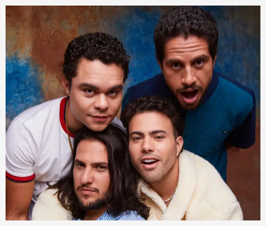

Sobre

Você gosta de música pop, reggae e rock alternativo?
Então você precisa conhecer a banda Lagum, uma das revelações da música brasileira nos últimos anos.
Eles começaram em 2014 em Belo Horizonte e desde então lançaram três álbuns: Seja o Que Eu Quiser (2016), Coisas da Geração (2019) e Memórias (De Onde Eu Nunca Fui) (2021).
Este último foi indicado ao Grammy Latino e traz canções emocionantes em homenagem ao ex-baterista Tio Wilson, que faleceu em 2020.